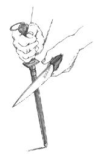
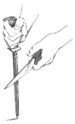
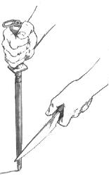

How to use a sharpening steel.
If you're going to invest in a good knife, you'll want to hone it frequently. The sharpening steel is a maintenance tool that, if used correctly, will restore your blade's tiny teeth. A steel doesn't really sharpen, but hones or trues the edge, returning the blade to its original sharpness. Using a steel takes a light touch and a little skill. Practice the following steps in slow-motion.
1 Hold the sharpening steel point down on a table or cutting board.
2 Place the heel of the blade (the cutting edge near the handle) against the top of the steel and point the tip slightly upward, holding the knife at a 20° angle away from the steel, which is about a quarter of an inch away.
3 Slide the blade toward the table, maintaining a light pressure and a 20° angle. As the knife glides down the steel, gradually pull the knife back toward your body so that the middle of the blade is in contact with the steel.
4 Pass the tip of the blade over the bottom of the steel. Repeat the motion on the other side of the steel with the other side of the blade. Alternate sides four or five more times. Wipe the steel and the blade with a damp cloth when you're finished.
|
 |
 |
 |